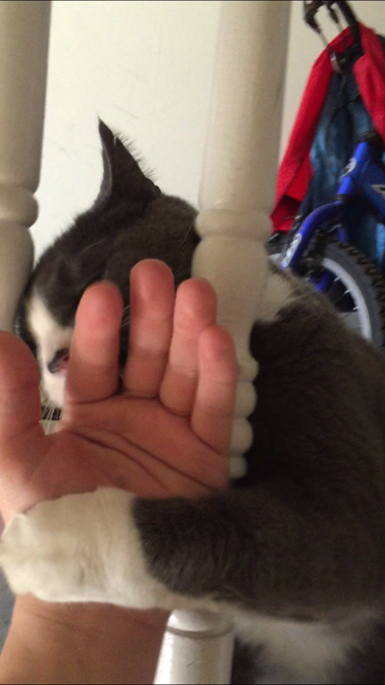
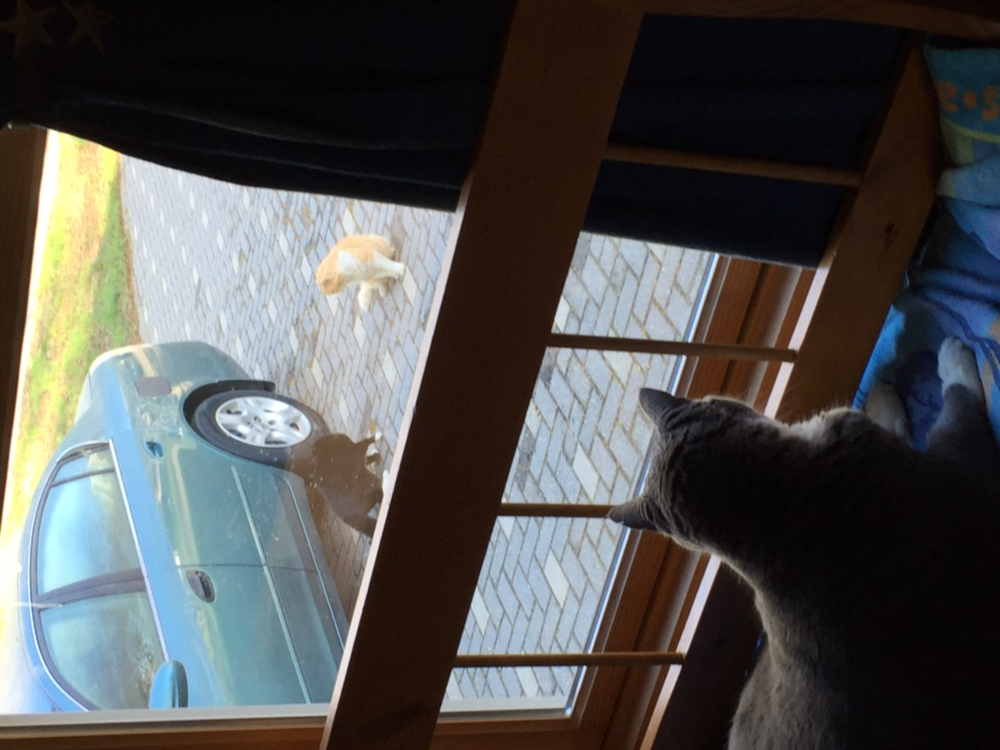
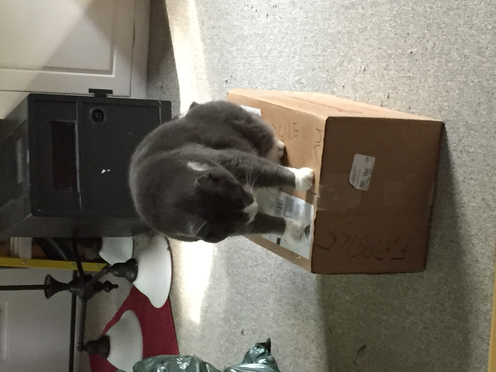
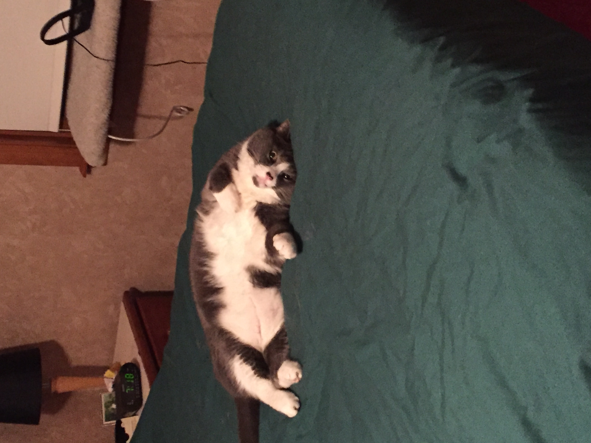

I have a cat his name is Tee Too. He has lived with me and mom for over a year now. He used to live with my brother. He is a good boy who loves treats and sleep.
Tee Too is a gray and white cat. Above is a photo of the first time I met him. As you can see strangers are not his favorite. He has had a couple owners before me and my mom got him. Because of this we don't know how old he is, Our guess is somewhere between 6-9 years old. Tee Too is overweight but he gets to be, mainly because he is a former outdoor cat who has since retired, although a couple times he has accidentally gotten out for a second.
Tee Too observing the local youth.
Some things that Tee Too likes to do is lay around in various locations throughout the house. Eat treats and drink water. Play with string and belts. Have some catnip and sit in window sills.
One of his favorite thins is boxes. He has had box forts at his former owner's houses before and our own. He enjoys them because, he can lay in a new spot, Less vulnerability then laying on the floor, and sometimes there a dark new hiding spot.
In conclusion, Tee Too is a sweet, fat, middle aged cat. He still sprints around the house, jumps accross the furniture, scratches and bites, and acts like a young crazy kitty. Thanks for viewing.